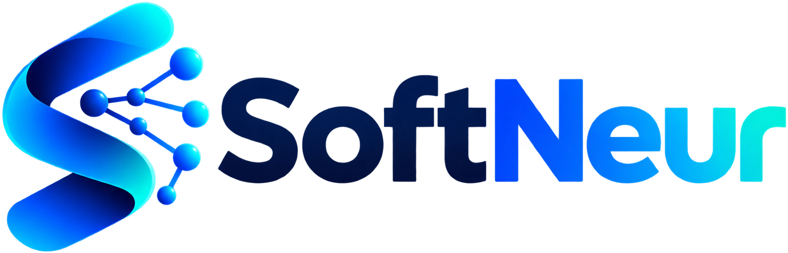

Logiciels sur mesure
Des applications adaptées à vos processus et aux besoins de vos utilisateurs.
Parlons-en
Nous contacter →GENIE LOGICIEL × INTELLIGENCE ARTIFICIELLE × INNOVATION
Un projet logiciel, une application mobile, une demande de conseil ou de support ? Présentez-nous votre besoin.
Ce formulaire prépare un e-mail. Vous pourrez le relire et l’envoyer depuis votre messagerie.
COMMENT POUVONS-NOUS VOUS AIDER ?
Des applications adaptées à vos processus et aux besoins de vos utilisateurs.
Parlons-enDes expériences mobiles claires, du prototype à la mise à disposition.
Parlons-enSites, portails et plateformes pour connecter vos services et vos utilisateurs.
Parlons-enRelier vos outils et vos systèmes pour simplifier la circulation de l’information.
Parlons-enClarifier vos objectifs, vos priorités et les choix techniques de votre projet.
Parlons-enAccompagner le fonctionnement, la correction et l’évolution de vos applications.
Parlons-enAider vos équipes à prendre en main les outils et à développer leurs compétences.
Parlons-enVotre objectif, le problème rencontré, les utilisateurs, les contraintes et les documents utiles pour comprendre votre projet.
Non. Il ouvre votre messagerie avec un brouillon. L’envoi se fait depuis celle-ci. Si elle ne s’ouvre pas, copiez le message et écrivez directement à contact@softneur.com.
Consultez le site DeepAMC pour découvrir le produit et ses téléchargements.
Décrivez votre application, les technologies utilisées si vous les connaissez et les difficultés ou évolutions souhaitées.
DONNONS FORME À VOTRE PROJET